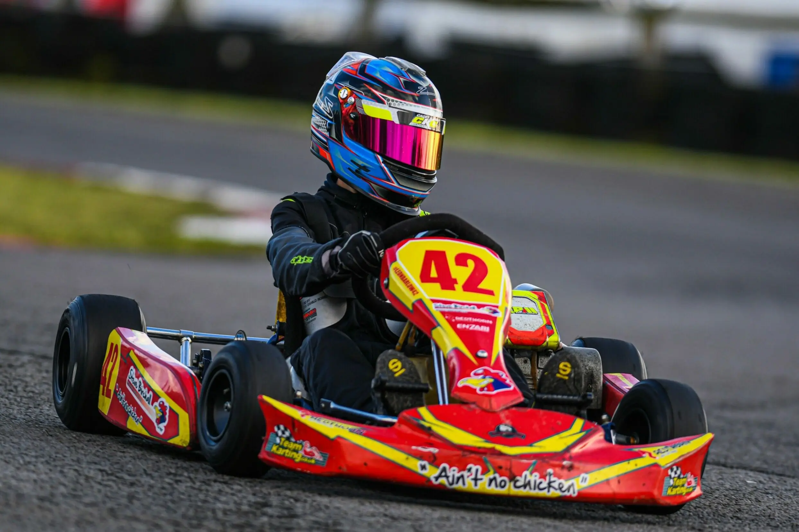
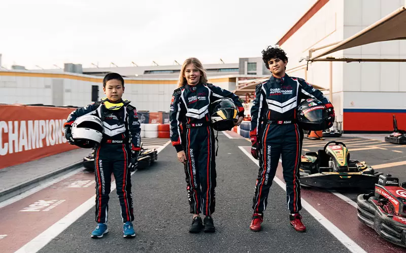
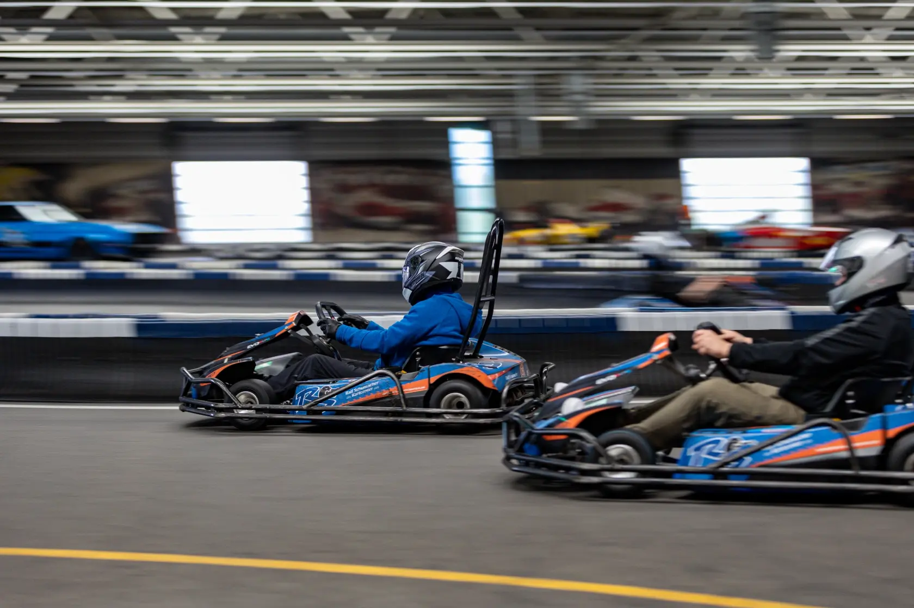
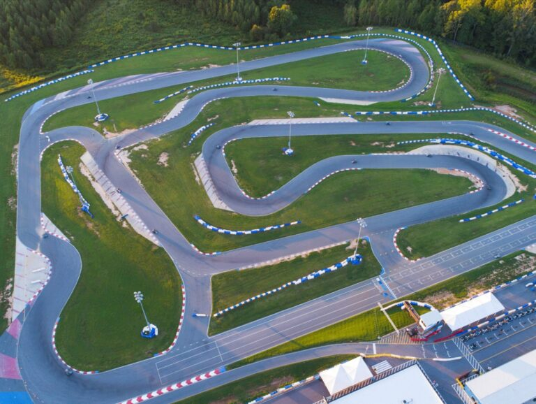

Головна | Розцінки | Реєстрація | Змагання | Блокове оформлення | Перший заїзд
Ласкаво просимо на сайт картинг-бізнесу «Швидка Колія» у місті Дніпро! Це місце для тих, хто любить швидкість, змагання та активний відпочинок.

«Швидка Колія» — це картинг-центр, створений для відпочинку, розваг та проведення заїздів. Тут можна покататися на картингах, спробувати свої сили на трасі та позмагатися з друзями.
Наш сайт створюється як інформаційний ресурс картинг-бізнесу. Тут відвідувачі зможуть знайти основну інформацію про картинг, трасу, послуги, ціни та правила відвідування.

Картинг — це вид автомобільного спорту, у якому використовуються невеликі гоночні автомобілі — карти. Незважаючи на просту конструкцію, картинг дозволяє відчути швидкість та випробувати навички керування.
Картинг підходить як для людей, які вперше хочуть спробувати себе за кермом карта, так і для досвідчених водіїв. Заїзди можуть бути індивідуальними або проходити у форматі змагання між декількома учасниками.

Основною частиною картинг-центру є траса. Вона дозволяє учасникам проходити повороти, прямі ділянки та обганяти інших учасників. На трасі важливо дотримуватися правил безпеки та слухати інструкції працівників картинг-центру.
Траса «Швидкої Колії» призначена для того, щоб заїзд був цікавим як для новачків, так і для людей, які вже мають досвід у картингу.
